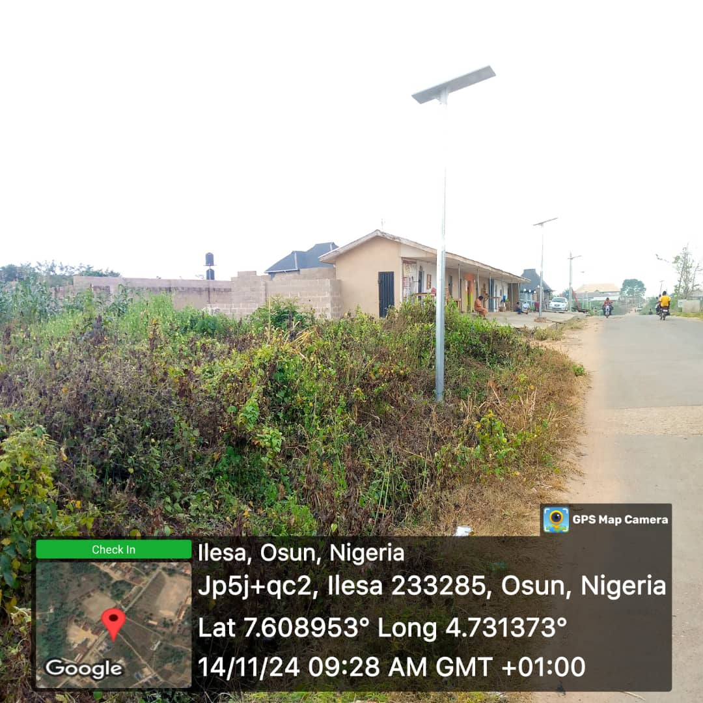

Illustrative visual
01 — SOLAR LIGHTING
Solar street lighting
Solar street lighting installations
Abuja, Kano, Kaduna, Borno, Cross River, Lagos and other states
From community roads to public facilities, XOA has supplied and installed street-lighting systems across Abuja, Kano, Kaduna, Borno, Cross River, Lagos and other states.